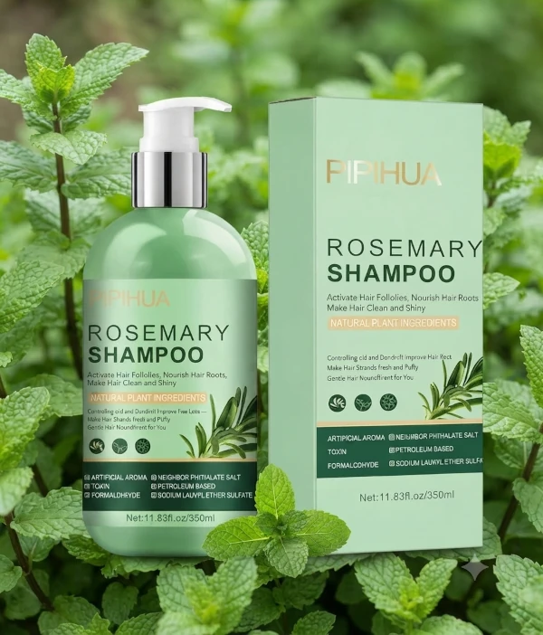
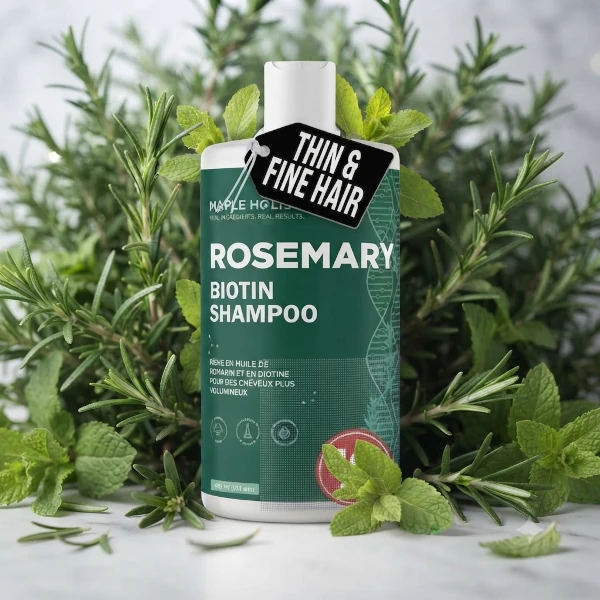
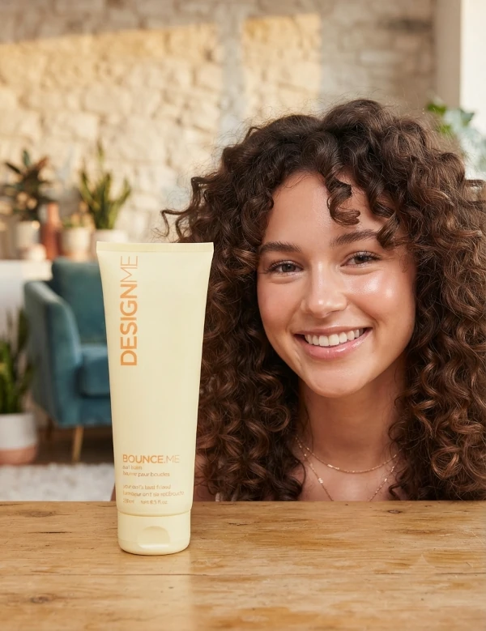
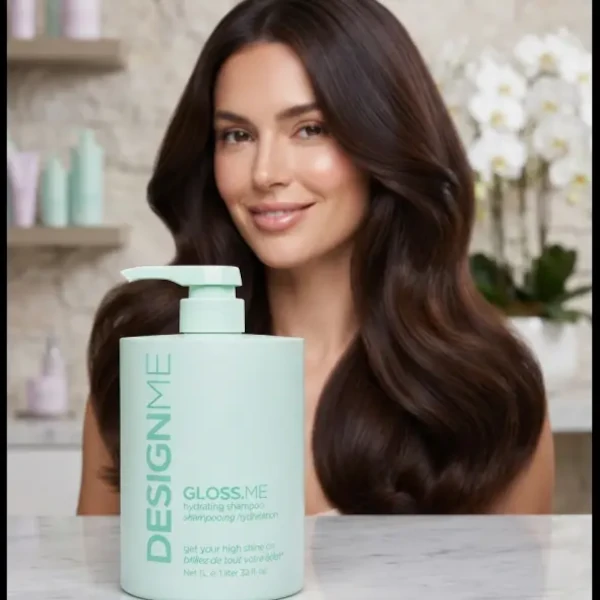

Aquí encontrarás nuestra selección experta de productos para el cuidado de tu cabello que transformara tu experiencia.

Shampoo Rosemary
¿Notas tu cabello fino, debilitado o con caída excesiva? Recupera la fuerza y vitalidad de tu melena con nuestro shampoo de romero y menta. Su fórmula avanzada actúa como un potente tratamiento regenerador que estimula los folículos pilosos, favoreciendo un crecimiento visiblemente más saludable.
Diseñado tanto para hombres como para mujeres, este Shampoo combina los beneficios del aceite esencial de romero con la hidratación profunda de la biotina y las propiedades purificantes del aceite de árbol de té.
Comprar en la tienda

Shampoo Biotin
¿Buscas devolverle el volumen y la vida a tu cabello fino? Este champú combina la potencia regeneradora del romero y la biotina con la pureza de una fórmula 100% vegana. Enriquecido con vitaminas B y aceite de árbol de té, limpia profundamente tu cuero cabelludo sin agredirlo. Disfruta de un cabello más espeso, fuerte y brillante, libre de parabenos, siliconas y sulfatos. Calidad profesional en 473 ml diseñada para hombres y mujeres que no se conforman.
Comprar en la tienda

Bálsamo y crema para rizos Design.Me
¡Dile adiós al frizz y hola a unos rizos de impacto! Como experta en Kharla Cosmetics, mi recomendación infalible para definir y nutrir tu melena es el bálsamo BOUNCE.ME de Design.Me.
Lo que hace especial a esta crema es su fórmula rica en aceite de argán, que hidrata profundamente mientras define tus ondas, rizos o bucles con una suavidad increíble. Es el aliado perfecto porque es totalmente libre de sulfatos y parabenos, garantizando un cuidado saludable y profesional desde la raíz hasta las puntas.
Obtén ese volumen, definición y brillo natural que tanto buscas sin complicaciones. ¡Tus rizos te lo agradecerán!
¡Dale a tu cabello el movimiento que merece!
Comprar en la tienda

Champú hidratante GLOSS.ME
¿Sueñas con un cabello de impacto? ¡Te presento mi nuevo secreto en Kharla Cosmetics! 💖 Como experta, siempre busco lo mejor para ustedes y el Champú Hidratante GLOSS.ME de DESIGNME es sencillamente espectacular.
Su fórmula mágica con aceites de cáñamo y argán transforma el pelo seco y sin vida en una melena con una suavidad increíble y un brillo tipo espejo. Lo mejor es que es súper versátil: ¡cuida tu color y funciona de maravilla en todo tipo de cabello, sea liso, ondulado o rizado!
Es el primer paso para un cabello radiante y saludable. ¡Dale a tu melena el mimo que se merece y luce un brillo de alfombra roja! ✨
Comprar en la tienda